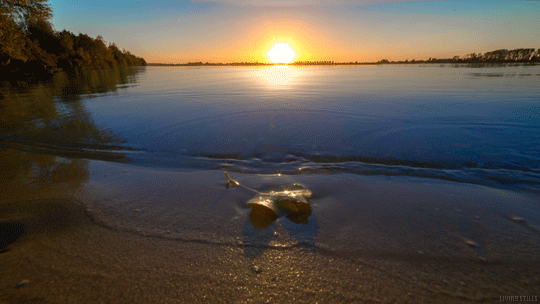
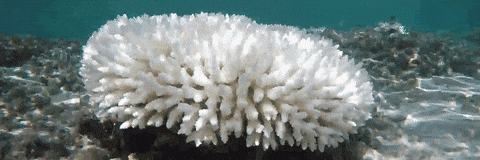
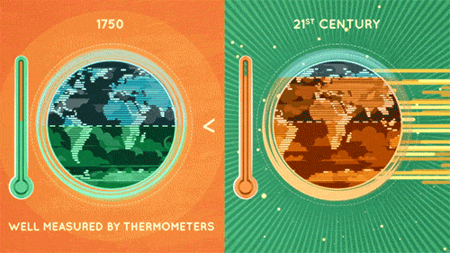
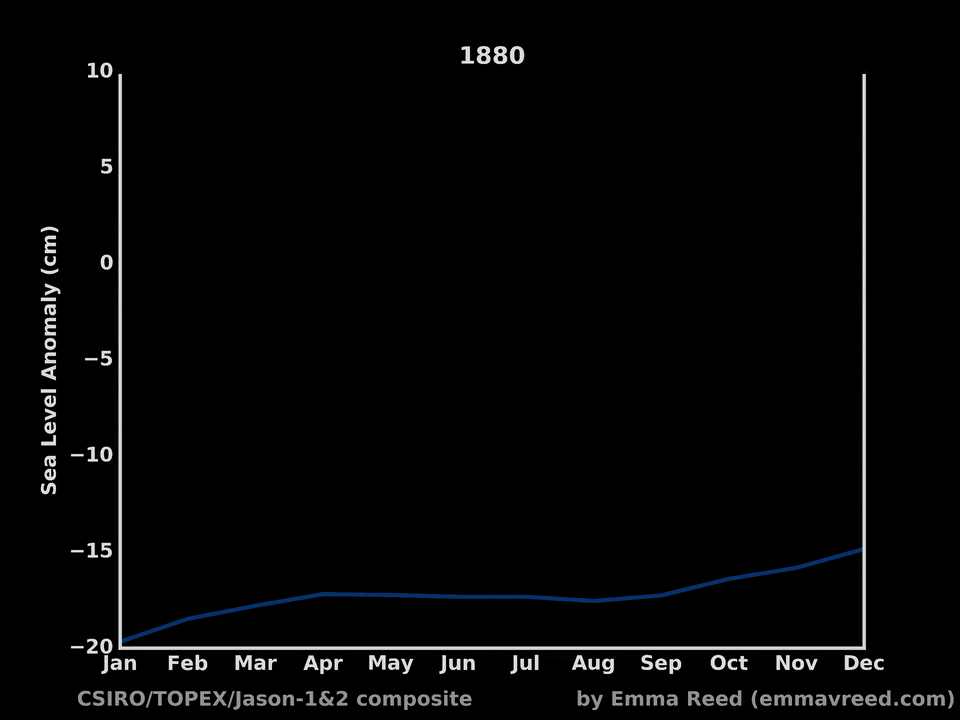

If the Average Global Temperature Rises 1.5 Degrees Celcius:
If the Average Global Temperature Rises 2 Degrees Celcius:
If the Average Global Temperature Rises 4 Degrees Celcius:
If the Average Global Temperature Rises 6 Degrees Celcius:
If the Average Global Temperature Rises 12 Degrees Celcius:
• lower infection rate from disease
• continued adequate supply of food and water (for organisms)
• decrease in frequency of natural disasters such as floods and droughts
• decreased probability of the extinction of many species
• overall increased happiness and decreased panic
• ocean acidity and levels remain stagnent or even decrease

• small glaciers start to disappear, engdangering water supplies for many people
• increased ocean acifification
• 80% of the coral reefs are bleached
1.5˚ Celcius increase is actually the maximum degree increase that our Earth can handle
Anything else would be too much for any organism (other than humans) to adapt humans

• 20-30% drop in water availability for vulnerable regions
• crop yields (in certain regions like Africa) drop 5-10%
• millions of people are exposed to deadly diseases like malaria
(because of the increased life of disease vectors like insects)
• millions are displaced because of flooding, tornadoes, and other natural disasters
• arctic species are at high risk of extinction
• irreversible Greenland ice sheet melting
• highest temperature in 30 million years
• sea level rise of 3-6 feet
• 40% of inhabited land experiences drought
• hundreds of millions of humans are forced to be refugees
(because of decreased food and water availability)
• half of all known species go extinct
• Professor Kevin Anderson states that "a 4˚ C future is incompatible with an
organized global community"
One of the most dangerous effects of climate change is the
ever increasing global temperature. This interactive tab is
meant to inform you guys, the public how dangerous the rising
temperature is on the organisms that live on our Earth, for
animals, plants, and humans. After reading this, we hope that
you not only believe the harmful impacts that humans are
having on our environment, but also change your lifestyle
to become more environmentally friendly.


• climate change becomes irreversible
• sea level rise threatens small islands, low-lying coastal areas, and
major world cities
• some of the large Himalayan glaciers begin to disappear, endangering the
water supplies of those residing in China and India
• agricultural yields continue to drop
• poles will warm over 25˚ C, allowing palm trees to grow in places like Siberia
• ocean levels will rise 2-3 feet per decade instead of 1 foot
• civilizations will fall (not enough resources)
• billions will die
• the Earth will overall not be a pleasant of even bearable place to live